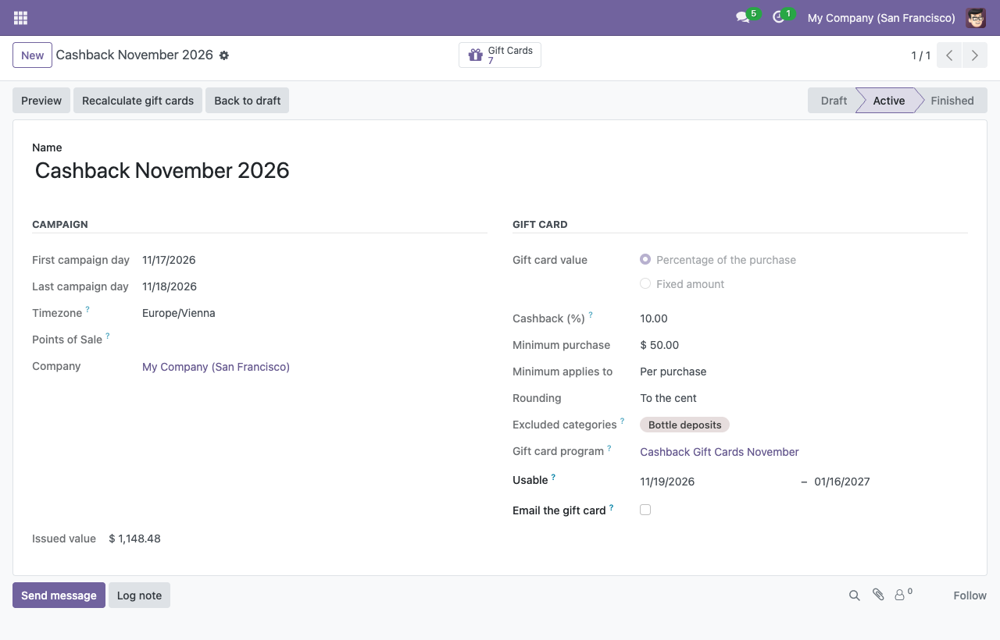
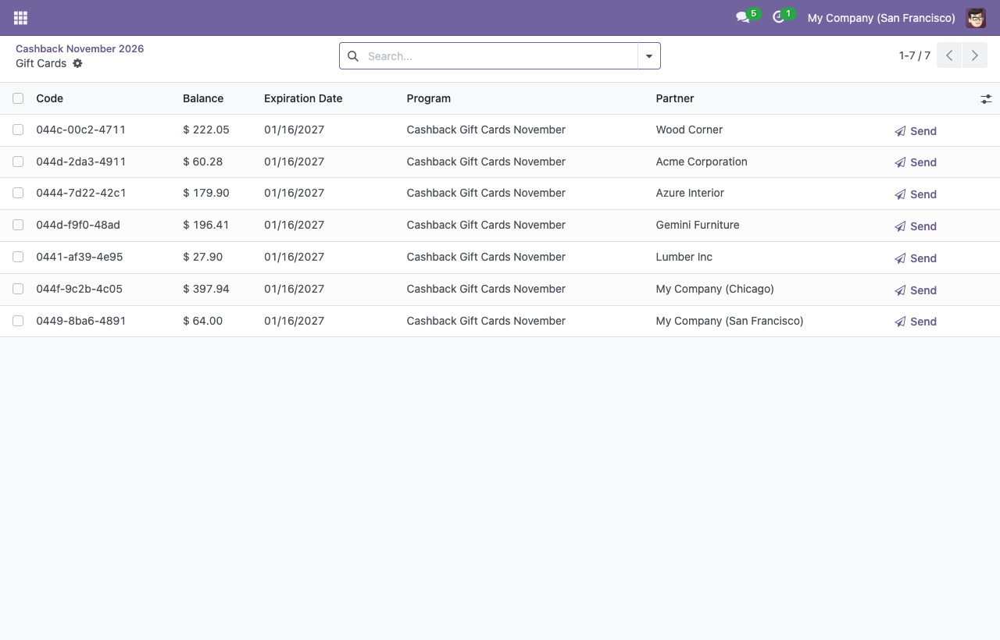
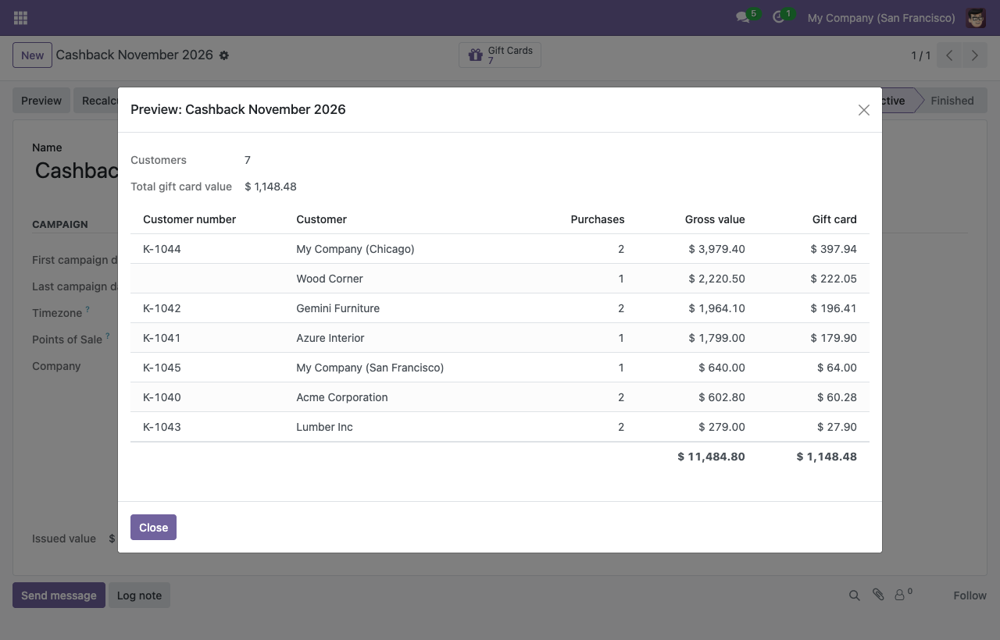

Instead of giving a discount at the till, give it back as a personal gift card that can only be used on the next purchase. During your cashback campaign, every paid Point of Sale order of a customer creates or tops up that customer's gift card right away. The gift card becomes usable the day after the campaign and stays valid until the date you choose.
Example with 10 %: a customer spends 500 EUR during the campaign and immediately receives a 50 EUR gift card, which they can redeem from the day after the campaign. You can also give a fixed amount instead, e.g. 5 EUR for every purchase above 50 EUR.
Point of Sale > Configuration > Cashback Campaigns. Choose the days, the percentage or fixed amount, the minimum purchase, the gift card program and how long the gift cards stay valid, then click Activate.

Each customer has one gift card per campaign. Its value follows their purchases and refunds during the campaign.

See every customer's gross purchases and gift card at any time.

pos_loyalty (Point of Sale + Coupons & Loyalty)